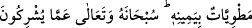

Allah’ı gereği gibi bilemediler. Halbuki kıyamet günü yer, tamamen O’nun avucu
içindedir, gökler de sağ elinde dürülmüştür. O, onların ortak koştuklarından uzak
ve yücedir.” (ez-Zümer, 39/67)
Çünkü bu ayetleri okumak, boğulmaya karşı bir teminattır.
. Zemahşerî, el-Fâik fî garîbi’l-hadîs, thk. Muhammed Ebü’l-Fazl İbrâhim, Ali
Muhammed Becâvî, I-IV, Kahire 1971, I, 420; en-Nihâye, II, 109.
Bk. Irâkî, Muğnî, IV, 376.